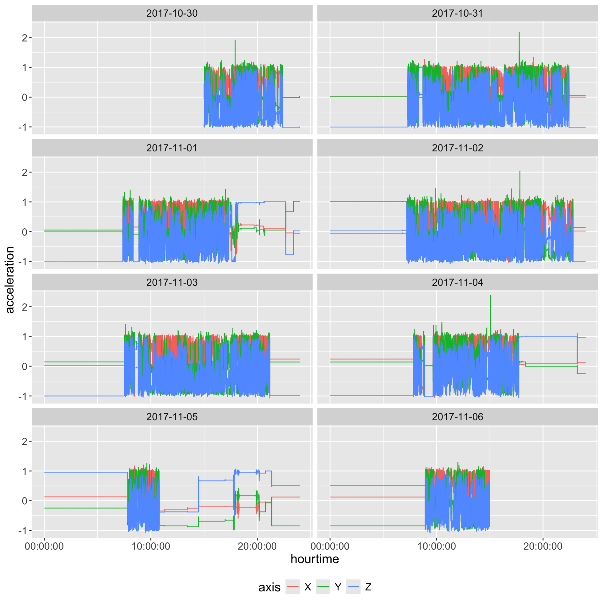
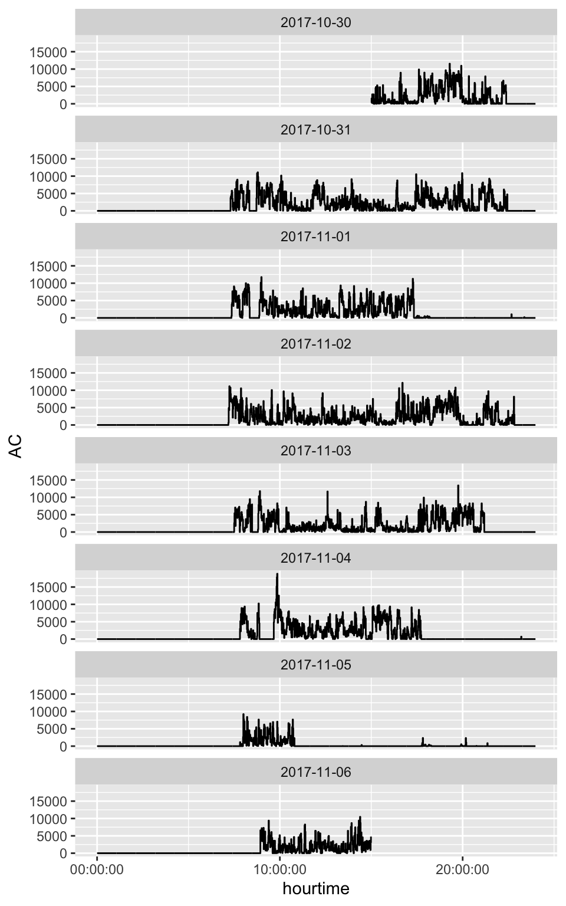

Introduction to Accelerometer Data
Not Discussed
- GGIR
- MVPA/Thresholds
- Sedentary time
- Sleep estimation
- Population analysis/Lasagna plots
Learning Objectives
- Understand the basics of processing accelerometer data
- GT3X -> CSV/Activity Counts/Steps
- Open source methods in R
- Many of the methods either have a Python analog
- Lots are R wrapper for Python libraries
- GGIR
What is Accelerometer Data?
- Sensor that measures acceleration in 3D space: X/Y/Z
- Typically measured in g-forces (g) or m/s²
- Sampled at regular(ish) time intervals (e.g., 30Hz, 100Hz)
How Does It Work?
- Small MEMS (micro electro mechanical system) accelerometer inside a wearable device
- Measures acceleration by detecting motion and gravitational forces
- Outputs time-series data: raw acceleration signals
Wrist-Worn vs. Hip-Worn Accelerometers
| Feature | Wrist-Worn Devices | Hip-Worn Devices |
|---|---|---|
| Placement | Worn on wrist | Attached to belt |
| Compliance | Higher | Lower |
| Activity Types | Captures arm movements | Better for whole-body movement |
Common Data Formats
- Raw Accelerometer Data (high-resolution time-series data)
- Activity Counts (aggregated over time windows)
- Wear Time Detection (non-wear vs. wear periods)
- Steps (estimation of a “step”)
Example Studies
- NHANES Accelerometry (CDC)
- Large-scale population studies using wrist-worn devices
- Released raw data - we released processed version
- UK Biobank Wearable Data
- Over 100,000 participants with 7-day wrist accelerometer recordings
- All of US uses FitBit
Technical Stuff: Conda/Environments
- If using Python, you know
conda - If using R, Python link using
reticulatepackage - Multiple
condaenvironments may be needed - package/module A needs numpy <= 2.11 and package B needs numpy > 2.30
- “Switching” conda environments within a script/session is a hassle
Brief Package overview
read.gt3x- reads GT3X format CRAN/GitHubagcounts- on CRAN, wrapper of Python and other uses CRAN/GitHubactilifecounts- on CRAN, implements Activity Counts native in R CRAN/GitHubagcounter: direct wrapper of Python code (uses conda), but not on CRAN CRAN/GitHubGGIR- the firehose of outputs/GGIRread- reader CRAN/GitHubactigraph.sleepr- implements Choi/Troiano wear time methods CRAN/GitHub
stepcount- implements stepcount algorithm from Oxford group CRAN/GitHubwalking- implements other walking/step estimation methodsADEPT- walking segmentationMIMSunit- calculates MIMS unitsacc- explore accelerometer dataaccelerometry- functions for Processing Accelerometer DataSummarizedActigraphy- dumping ground for some functions we made
Data
- Single file
AI15_MOS2D09170398_2017-10-30.gt3xfrom Figshare repository - From Chadwell et al. (2019a), which was released with the publication Chadwell et al. (2019b).
- Start with GT3X file - ActiGraph format
- We can talk technical aspects of this binary file, but let’s just read it in
Getting Data
Read in the data
- Using
read.gt3x::read.gt3xfunction asDataFrame- make it adata.frameimputeZeroes- discuss idle sleep mode
library(read.gt3x)
(df = read.gt3x::read.gt3x(path = gt3x_file,
asDataFrame = TRUE,
imputeZeroes = TRUE))Sampling Rate: 30Hz
Firmware Version: 1.9.2
Serial Number Prefix: MOS
time X Y Z
1 2017-10-30 15:00:00 0.188 0.145 -0.984
2 2017-10-30 15:00:00 0.180 0.125 -0.988
3 2017-10-30 15:00:00 0.184 0.121 -0.984
4 2017-10-30 15:00:00 0.184 0.121 -0.992
5 2017-10-30 15:00:00 0.184 0.117 -0.988
6 2017-10-30 15:00:00 0.184 0.125 -0.988Where are the subseconds?
digits.secs - show a certain number of digits for seconds from time
[1] 3Sampling Rate: 30Hz
Firmware Version: 1.9.2
Serial Number Prefix: MOS
time X Y Z
1 2017-10-30 15:00:00 0.188 0.145 -0.984
2 2017-10-30 15:00:00 0.180 0.125 -0.988
3 2017-10-30 15:00:00 0.184 0.121 -0.984
4 2017-10-30 15:00:00 0.184 0.121 -0.992
5 2017-10-30 15:00:00 0.184 0.117 -0.988
6 2017-10-30 15:00:00 0.184 0.125 -0.988# A tibble: 18,144,000 × 4
time X Y Z
<dttm> <dbl> <dbl> <dbl>
1 2017-10-30 15:00:00.000 0.188 0.145 -0.984
2 2017-10-30 15:00:00.033 0.18 0.125 -0.988
3 2017-10-30 15:00:00.066 0.184 0.121 -0.984
4 2017-10-30 15:00:00.099 0.184 0.121 -0.992
5 2017-10-30 15:00:00.133 0.184 0.117 -0.988
6 2017-10-30 15:00:00.166 0.184 0.125 -0.988
7 2017-10-30 15:00:00.200 0.18 0.125 -0.988
8 2017-10-30 15:00:00.233 0.176 0.121 -0.992
9 2017-10-30 15:00:00.266 0.184 0.121 -0.984
10 2017-10-30 15:00:00.299 0.18 0.121 -0.992
# ℹ 18,143,990 more rowsTime (data) is not your friend
- Time zones are hell
read.gt3xattached a GMT timezone to the data, but there is a note
- “local” means local to the device/initialization, not your machine
Can do tz<- to change the timezone if you want (watch out for DST):
Header - in the attributes
The format of df is a activity_df, which is why you see the header information, but you need to know how to extract these:
[1] "names" "row.names" "class" "subject_name"
[5] "time_zone" "missingness" "old_version" "firmware"
[9] "last_sample_time" "serial_prefix" "sample_rate" "acceleration_min"
[13] "acceleration_max" "header" "start_time" "stop_time"
[17] "total_records" "bad_samples" "features" [1] 30[1] "8.0"[1] "00:00:00"GT3X information
$ Serial Number :"MOS2D09170398"
$ Device Type :"wGT3XBT"
$ Firmware :"1.9.2"
$ Battery Voltage :"3.94"
$ Sample Rate :30
$ Start Date : POSIXct, format: "2017-10-30 15:00:00"
$ Stop Date : POSIXct, format: "2017-11-06 15:00:00"
$ Last Sample Time : POSIXct, format: "2017-11-06 15:00:00"
$ TimeZone :"00:00:00"
$ Download Date : POSIXct, format: "2017-11-16 21:14:02"
$ Board Revision :"4"
$ Unexpected Resets :"0"
$ Acceleration Scale:256
$ Acceleration Min :"-8.0"
$ Acceleration Max :"8.0"
$ Limb :"Wrist"
$ Side :"Left"
$ Dominance :"Non-Dominant"
$ Subject Name :"H14"
$ Serial Prefix :"MOS"Important - save attributes if convert to data.frame/tibble
Zeroes
- Again, these zeroes are not “real” zeroes
Sampling Rate: 30Hz
Firmware Version: 1.9.2
Serial Number Prefix: MOS
time X Y Z
1 2017-10-30 15:00:22 0 0 0
2 2017-10-30 15:00:22 0 0 0
3 2017-10-30 15:00:22 0 0 0
4 2017-10-30 15:00:22 0 0 0
5 2017-10-30 15:00:22 0 0 0
6 2017-10-30 15:00:22 0 0 0Fill Zeros - using LOCF
- Fill these in using last observation carried forward (LOCF)
- What ActiLife does
- Respects a zero variance for previous values
sample_rate = attr(df, "sample_rate")
acceleration_max = as.numeric(attr(df, "acceleration_max"))
df_zeros = df = dplyr::as_tibble(df)
df = df %>%
# find where all zeroes/imputed zeroes
mutate(all_zero = X == 0 & Y == 0 & Z == 0) %>%
# replace all 0 with NA so it can be filled
mutate(
X = ifelse(all_zero, NA_real_, X),
Y = ifelse(all_zero, NA_real_, Y),
Z = ifelse(all_zero, NA_real_, Z)
)
df = df %>%
# last observation carried forward
tidyr::fill(X, Y, Z, .direction = "down")# A tibble: 6 × 5
time X Y Z all_zero
<dttm> <dbl> <dbl> <dbl> <lgl>
1 2017-10-30 15:00:21.933 0.25 0.078 -0.98 FALSE
2 2017-10-30 15:00:21.966 0.25 0.078 -0.984 FALSE
3 2017-10-30 15:00:22.000 0.25 0.078 -0.984 TRUE
4 2017-10-30 15:00:22.033 0.25 0.078 -0.984 TRUE
5 2017-10-30 15:00:22.066 0.25 0.078 -0.984 TRUE
6 2017-10-30 15:00:22.099 0.25 0.078 -0.984 TRUE Can now create summaries/metrics, but …
Visualization
If you plot less with more data, something is going in the wrong direction
- Karl Broman
Reshaping Raw Data for ggplot2
Reshape the data by Axis:
long = df %>%
tidyr::pivot_longer(cols = c(X, Y, Z),
names_to = "axis",
values_to = "acceleration")
head(long)# A tibble: 6 × 3
time axis acceleration
<dttm> <chr> <dbl>
1 2017-10-30 15:00:00.000 X 0.188
2 2017-10-30 15:00:00.000 Y 0.145
3 2017-10-30 15:00:00.000 Z -0.984
4 2017-10-30 15:00:00.033 X 0.18
5 2017-10-30 15:00:00.033 Y 0.125
6 2017-10-30 15:00:00.033 Z -0.988Plot First 5 minutes (30Hz dense)
library(ggplot2); library(lubridate)
(qp = long %>%
filter(between(time, floor_date(time[1]),
floor_date(time[1]) + as.period(5, "minutes"))) %>%
ggplot(aes(x = time, y = acceleration, colour = axis)) +
geom_rect(aes(xmin = ymd_hms("2017-10-30 15:00:22"),
xmax = ymd_hms("2017-10-30 15:00:37"),
ymin = -Inf, ymax = Inf), fill = 'pink', alpha = 0.05) +
geom_line())Same Plot with Zeroes
Plot all data
- Creating separate
dateandtimeuseful for plotting/summary
# A tibble: 10 × 5
time axis acceleration date hourtime
<dttm> <chr> <dbl> <date> <time>
1 2017-10-30 15:00:00.000 X 0.188 2017-10-30 15:00:00.000000
2 2017-10-30 15:00:00.000 Y 0.145 2017-10-30 15:00:00.000000
3 2017-10-30 15:00:00.000 Z -0.984 2017-10-30 15:00:00.000000
4 2017-10-30 15:00:00.033 X 0.18 2017-10-30 15:00:00.033333
5 2017-10-30 15:00:00.033 Y 0.125 2017-10-30 15:00:00.033333
6 2017-10-30 15:00:00.033 Z -0.988 2017-10-30 15:00:00.033333
7 2017-10-30 15:00:00.066 X 0.184 2017-10-30 15:00:00.066667
8 2017-10-30 15:00:00.066 Y 0.121 2017-10-30 15:00:00.066667
9 2017-10-30 15:00:00.066 Z -0.984 2017-10-30 15:00:00.066667
10 2017-10-30 15:00:00.099 X 0.184 2017-10-30 15:00:00.100000Plot all data
Plot Second-Level Data
Take average over each axis and plot
long %>%
mutate(time = floor_date(time, unit = "1 second")) %>%
group_by(time, axis) %>%
summarise(
acceleration = mean(acceleration, na.rm = TRUE), .groups = "drop"
) %>%
mutate(date = as_date(time),
hourtime = hms::as_hms(time)) %>%
ggplot(aes(x = hourtime,
y = acceleration,
colour = axis)) +
facet_wrap(~ date, ncol = 2) +
geom_step() +
theme(text = element_text(size = 15)) +
guides(colour = guide_legend(position = "bottom"))
Gravity Correction/Calibration
Gravity correction (Hees et al. 2014) or gravity calibration: try to correct data that is miscalibrated - estimates scale and shift parameters fitting to unit sphere
Note: Not all pipelines employ this, including a number of pipelines for ActiGraph data.
- Estimating how much of the data is projected onto the unit sphere (radius of length 1 for all 3 axes).
- Filters values standard deviation of the signal was <13 m\(g\) (milli-\(g\)) in all three axes within a 10-second time window.
- Iterative weighted least squares to get scale/shift parameter
Gravity Correction/Calibration
The GGIR::g.calibrate function takes in a data filename and calculates the calibration parameters. It is typically useful to input the output of g.inspectfile that provides metadata and a specification of the file being calibrated.
library(GGIR)
info = g.inspectfile(gt3x_file)
calibration_params = g.calibrate(
datafile = gt3x_file,
inspectfileobject = info)
Loading chunk: 1 2 3 4 5 6 7$scale
[1] 0.9963527 0.9984277 0.9929082
$offset
[1] -0.019216725 0.006963996 0.008016157Idle Sleep Mode & Gravity Correction
In the GGIR code g.calibrate calls g.readaccfile and if we look deeper, it reads in the data using read.gt3x::read.gt3x, but with the default of imputeZeroes = FALSE. That means that the calibration does not use any idle sleep mode data for estimation.
Thus, if we have read in the data and performed operations and then want to perform gravity calibration, we have a few options:
- Estimate gravity correction parameters separately and then apply to data (recommended).
- Output the data to a format GGIR understands and have it estimate gravity correction parameters from that data.
- Pass the data to
agcounts::agcalibrate. We recommend not using imputed zeroes, or fixed zeroes to estimate calibration parameters as it may bias the calibration parameters.
We’re not using calibrated data
Creating Activity Counts
- agcounts package implements method from https://github.com/actigraph/agcounts described in Neishabouri et al. (2022)
ac60 = df %>%
agcounts::calculate_counts(epoch = 60L, tz = lubridate::tz(df$time))
ac60 = ac60 %>%
select(time, AC = Vector.Magnitude, everything())
head(ac60) time AC Axis1 Axis2 Axis3
1 2017-10-30 15:00:00 271 180 201 25
2 2017-10-30 15:01:00 1543 371 1262 806
3 2017-10-30 15:02:00 852 452 553 465
4 2017-10-30 15:03:00 2733 1315 1486 1880
5 2017-10-30 15:04:00 965 756 317 510
6 2017-10-30 15:05:00 169 80 60 136- actilifecounts another implementation
- https://github.com/jhuwit/agcounter - another implementation using
reticulate
Plotting Activity Counts
Non-wear Detection
Two of the most popular methods (Choi et al. 2011; Troiano et al. 2014) are based on ActiGraph activity counts and have a specified window for finding zero counts with some flexibility of having spikes minutes of wear. These methods will be referred to as the Choi (Choi et al. 2011) and Troiano (Troiano et al. 2014) methods.
From Knaier et al. (2019), they describe:
“Troiano” defines non-wear time as intervals of at least 60 consecutive minutes of zero activity counts, allowing for up to two consecutive minutes of counts between 1 and 100 counts. The algorithm “Choi” defines non-wear times as periods of consecutive 0-counts of a certain duration. This duration is defined as “minimum length of non-wear times”. The default setting by the manufacturer is 90 min.
These methods have been implemented in the actigraph.sleepr package.
Estimating Non-wear Minutes
Rename the time column to timestamp and replace the columns with their lowercase counterpart for actigraph.sleepr:
Need workaround to cast the timestamp as a double so the checks pass for no gaps:
# A tibble: 6 × 3
period_start period_end length
<dttm> <dttm> <int>
1 2017-10-30 22:23:00.000 2017-10-31 07:18:00.000 535
2 2017-10-31 22:27:00.000 2017-11-01 07:21:00.000 534
3 2017-11-01 18:15:00.000 2017-11-01 19:53:00.000 98
4 2017-11-01 20:40:00.000 2017-11-02 07:11:00.000 631
5 2017-11-02 22:50:00.000 2017-11-03 07:30:00.000 520
6 2017-11-03 21:11:00.000 2017-11-04 07:49:00.000 638Estimating Non-wear Minutes
- We can transform this to be seconds instead of current bout format:
choi_df = purrr::map2_df(
choi_nonwear$period_start, choi_nonwear$period_end,
function(from, to) {
data.frame(timestamp = seq(from, to, by = 60L),
choi_wear = FALSE)
})
data = left_join(data, choi_df) %>%
tidyr::replace_na(list(choi_wear = TRUE))
head(data) timestamp AC axis1 axis2 axis3 choi_wear
1 2017-10-30 15:00:00 271 180 201 25 TRUE
2 2017-10-30 15:01:00 1543 371 1262 806 TRUE
3 2017-10-30 15:02:00 852 452 553 465 TRUE
4 2017-10-30 15:03:00 2733 1315 1486 1880 TRUE
5 2017-10-30 15:04:00 965 756 317 510 TRUE
6 2017-10-30 15:05:00 169 80 60 136 TRUE choi_wear n
1 FALSE 5080
2 TRUE 5000Plotting Non-wear
Overall, this looks like relatively clean data, but there are some segments (e.g. 2017-11-01 at 20:00) that may be misclassified.
data %>%
rename(time = timestamp) %>%
mutate(date = lubridate::as_date(time),
hourtime = hms::as_hms(time)) %>%
ggplot(aes(x = hourtime, y = AC)) +
geom_segment(
aes(x = hourtime, xend = hourtime,
y = -Inf, yend = Inf, color = choi_wear), alpha = 0.25) +
geom_line() +
guides(color = guide_legend(position = "top")) +
facet_wrap(~ date, ncol = 1)MIMS Units
MIMSunit package - calculate Monitor-Independent Movement Summary unit (John et al. 2019):
- interpolation of the signal to 100Hz,
- extrapolate signal for regions that have hit the maximum/minimum acceleration units for the device
- band-pass filter from 0.2 to 5Hz,
- absolute value of the area under the curve (AUC) using a trapezoidal rule,
- truncates low signal values to \(0\).
You may need to rename the time column to HEADER_TIME_STAMP for MIMS units depending on the version of the package:
HEADER_TIME_STAMP MIMS_UNIT
1 2017-10-30 15:00:00 7.586073
2 2017-10-30 15:01:00 12.369848
3 2017-10-30 15:02:00 9.468913
4 2017-10-30 15:03:00 15.628471
5 2017-10-30 15:04:00 7.354169
6 2017-10-30 15:05:00 7.216364Compare MIMS and AC
Karas et al. (2022) found a correlation of \(\geq 0.97\) between AC and MIMS units.
Step Counts
Open source method for estimating stepcounts: https://github.com/OxWearables/stepcount (Small et al. 2024), ported using reticulate.
Must load module and then run (can use GPU):
If no model is specified, the model is downloaded to a temporary directory, but users can use the stepcount::sc_download_model function to download the model file, store it, and pass it via the model_path argument.
Step Counts
The output of stepcount is a list of different pieces of information, including information about the device:
A data.frame of flags for walking:
Step Counts Aggregation
The stepcount method estimates steps in 10-second windows, which we can aggregate into minutes:
sc60 = sc$steps %>%
mutate(time = floor_date(time, "1 minute")) %>%
group_by(time) %>%
summarise(steps = sum(steps), .groups = "drop")
head(sc60)# A tibble: 6 × 2
time steps
<dttm> <dbl>
1 2017-10-30 15:00:00.000 0
2 2017-10-30 15:01:00.000 0
3 2017-10-30 15:02:00.000 0
4 2017-10-30 15:03:00.000 0
5 2017-10-30 15:04:00.000 0
6 2017-10-30 15:05:00.000 0Steps Per Minute
Steps vs AC


Conclusions
- Can go from Raw Data to Counts/Steps
- Wear time can be done using counts even if not using them (doesn’t catch everything)
- Need better quick plots for 1000s of participants
- A number of other metrics exist
- Can embarrassingly parallelize the processing
- We give NHANES derivatives